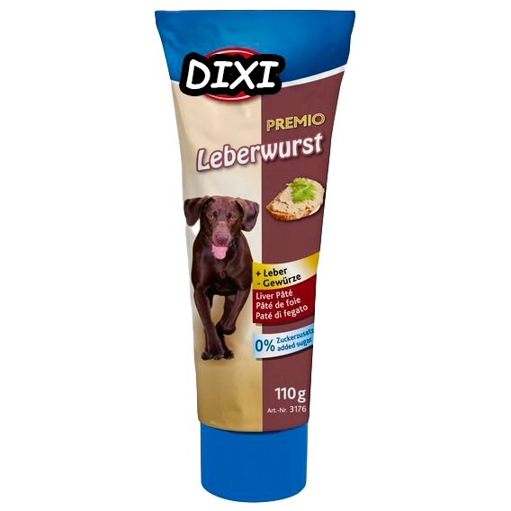
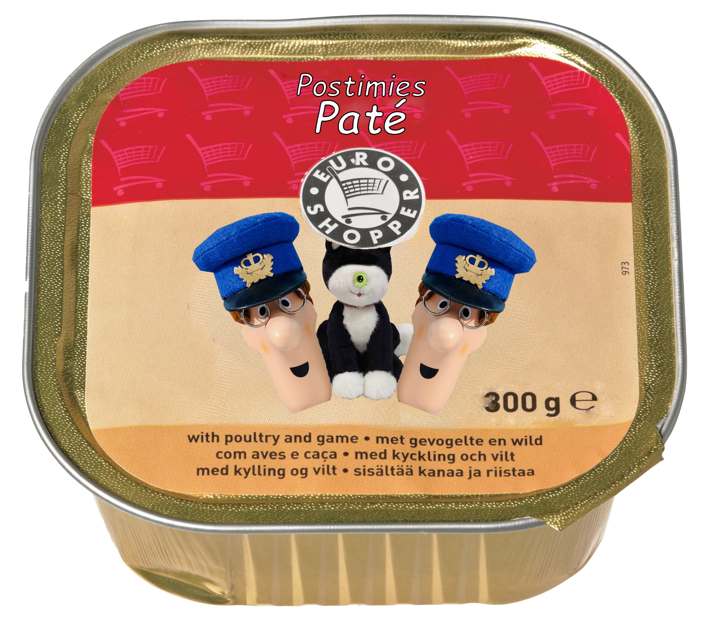
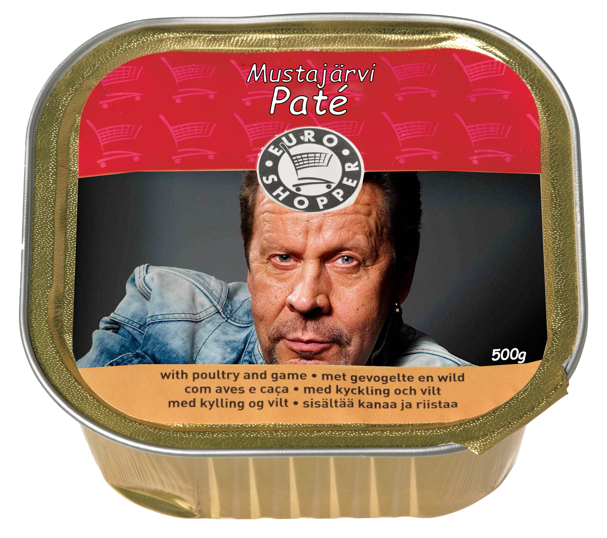

Maksa-Pate

Leikkaa maksa suikaleiksi ja kiehauta kolme minuuttia suolavedessä, huuhdo ja valuta hyvin.
Suikaloi sipuli ja kuullota pannulla kevyesti.
Jauha lihamyllyssä maksa, riistaliha ja sipuli...
Postimies-Pate

Lämmitä uuni 180 asteeseen ja voitele leipävuoka postin tuojan hymyllä.
Kuumenna paistinpannu keskilämmöllä ja lisää siihen sekoitettu kirjeiden
ja lehtien sekoitus. Paista kunnes kirjeet ovat kullanruskeita ja lehdet rapsakoita.
Siirrä sivuun...
Mustajärvi-Pate

Lämmitä uuni 180 asteeseen ja vuoraa leipävuoka salaperäisen Mustajärven veden hengähdyksellä.
Kuumenna paistinpannu keskilämmöllä ja lisää siihen sekoitettu salaperäinen
metsäneläinten jauheliha. Paista kunnes jauheliha saa kullanruskean värin ja huurteisen tuoksun.
Siirrä sivuun...